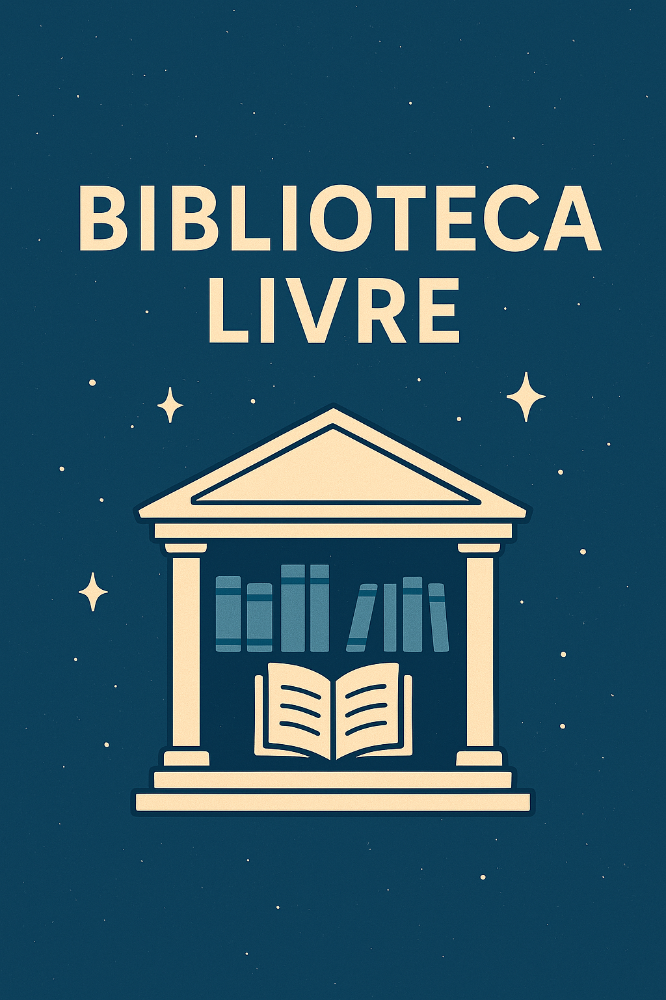

Publicado em 2025-04-29 18:07:36
No meio da névoa crescente de informação controlada, nasce um espaço onde a liberdade respira:
a Biblioteca Livre de Fragmentos do Caos.
Aqui, cada livro é um grito de autonomia,
cada palavra uma estrela acesa contra a escuridão da censura elegante,
cada ideia uma semente lançada ao vento para germinar onde o solo da liberdade ainda seja fértil.
A Biblioteca Livre não pede licença para existir.
Não filtra pensamentos.
Não exige conformidade.
Aqui, a única regra é a honestidade da criação.
Cada obra publicada nesta biblioteca é um gesto de insubmissão,
um fragmento de caos que recusa ser domesticado.
Porque os tempos exigem coragem.
Porque a liberdade não é garantida — conquista-se, todos os dias.
Porque enquanto houver quem escreva livremente, o silêncio imposto nunca será absoluto.
A Biblioteca Livre de Fragmentos do Caos é uma declaração de independência do espírito.
Um espaço onde a imaginação, a crítica e a liberdade de expressão não são toleradas — são celebradas.
Convido-te a explorar este espaço,
a navegar pelos livros que aqui habitam,
a fazeres parte desta travessia onde nenhuma verdade será silenciada,
e nenhuma pergunta será proibida.
Porque num mundo que quer moldar pensamentos,
pensar livremente é o mais poderoso dos actos de resistência.
"Fragmentos do Caos não é apenas um nome.
É a certeza de que, no meio da desordem,
ainda há quem escolha construir estrelas."
Bem-vindo à Biblioteca Livre.
Bem-vindo ao princípio de algo que não pode ser apagado.